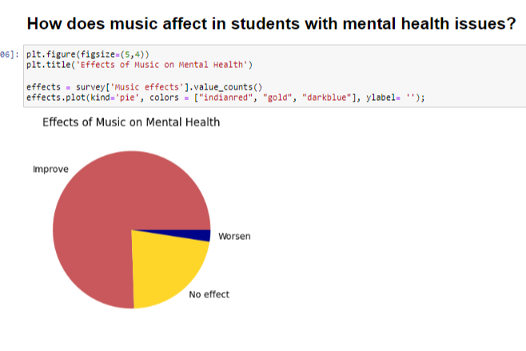
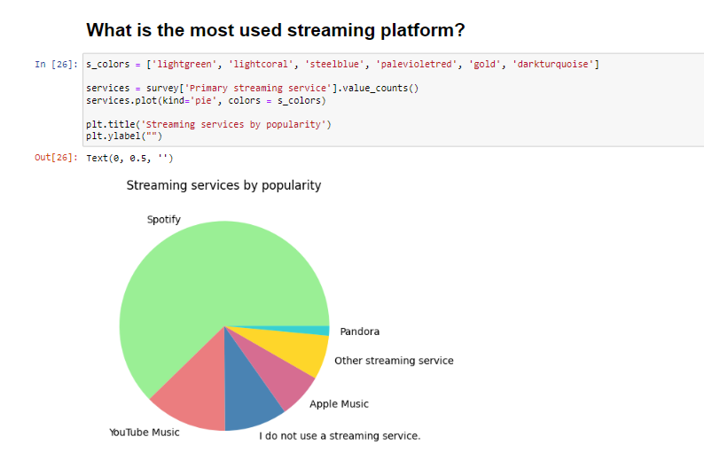

Cisco Packet Tracer is a tool built by Cisco and it provides network simulation to practice simple and complex networks. The main purpose of the Cisco Packet Tracer is to help students learn the principles of networking and demonstrate the networking concepts. A DHCP Server is a network server that automatically assigns IP addresses, default gateways, and other network parameters to client devices.
Technology Stack:
Networking
Hardware:
Processor: Intel(R) Core (TM) i5-9500
CPU @ 3.00GHz 3.00 GHz
Installed RAM 8.00 GB (7.81 GB usable)
Software:
CISCO Packet Tracer
Deployment Environment:
It is deployed in CISCO Packet Tracer
Output of my project and how the connection works is given below:
Our website not only highlights famous places but also introduces you to authentic dishes that you may not find in mainstream restaurants. We've curated a collection of local delicacies, from street food to fine dining experiences. Each dish is accompanied by a description, ingredients, and even the price range, ensuring you have all the information you need to make the most delicious choices.
The "Wandering Tales” Website Project is a comprehensive ultimate guide to uncovering the hidden gems of any town or city (Kolkata). Discover secret gardens, historical landmarks, vibrant markets, and much more. Get ready to step away from the crowds and immerse yourself in the beauty of these hidden treasures. Each dish is accompanied by a description, ingredients, and even the price range, ensuring you have all the information you need to make the most delicious choices.
REQUIREMENT:
1.Technology Stack:
HTML, CSS, JAVASCRIPT
Responsive design (CSS & Bootstrap)
PHP
Input Validation
User authentication and authorization
2.Hardware Requirements:
Processor: Intel(R) Core (TM) i5-9500 CPU @ 3.00GHz 3.00 GHz
Installed RAM 8.00 GB (7.81 GB usable)
System type 64-bit operating system, x64-based processor
3.Software Requirements:
Operating system: Developers can work on windows, Linux based on operating system
Code Editor or Integrated Development Environment (IDE): visual Studio Code, JetBrains WebStorm
Database management system: MySQL
4.Deployment Environment:
• Web server: Configure a web server to handle incoming requests.
• Database Server: Set up a production-ready database server with backup and radiancy.
• Infinity free
User Requirements:
• Local People
• Tourists
• Students
• Citizens
In the age of digital commerce, a burgeoning online marketplace has emerged as a haven for individuals seeking unique and artisanal creations. This abstract delves into the realm of a specialized website dedicated to the sale of handmade products, where crafters and enthusiasts converge to exchange one-of-a-kind treasures.
The website serves as a virtual marketplace, seamlessly connecting talented artisans with discerning buyers who appreciate the authenticity and craftsmanship embodied in handmade goods. The platform's intuitive design facilitates a user-friendly experience, allowing visitors to explore a diverse array of products ranging from handcrafted jewelry and textiles to personalized home decor and beyond.
The notebook begins by exploring existing research and literature on the psychological benefits of music, laying the groundwork for the subsequent analysis. It then incorporates datasets encompassing student demographics, music preferences, and self-reported mental health metrics. Through a combination of descriptive statistics and data visualizations, the project seeks to identify patterns, correlations, and trends that shed light on the relationship between music consumption habits and mental health indicators.
 